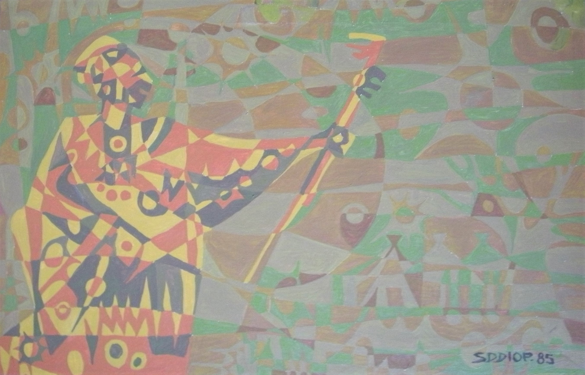

Seyni Diagne Diop
B. 1947
Artist Biography
Diop grew up in Senegal with little access to art but began drawing at an early age and became known as a designer and cartoonist. In the 1970s he drew the scripts for Amadou Gueye Ngom’s comic strips in the Dakar daily Le Soleil. A collection of these cartoons was published as a book in 1975. Diop began painting in oils and in the mid-1980s was selected to represent Senegal at the International Painters colony in Yugoslavia. On the occasion of a solo exhibition at the Africa Centre in London (1985?) Diop was described by the BBC African Service’s art programme as ‘one of Senegal’s foremost painters’ and a commentator praised his ‘marvellous feeling of rhythm and design’. Diop was chosen to show at the Dak’ Art in 1996 and in 2019 was given a solo exhibition at the National Art Gallery in Dakar titled ‘Graphics and Painting’.

Spirit Man, 1985